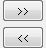

Rコンソールを起動するには、Originメニューから接続：Rコンソールを選択します。
既存のRコンソールを実行して、OriginとRの間のデータを交換します。
| Originの範囲 |
Originのデータ範囲を指定して、Rと交換します。 |
|---|---|
| データ |
Origin範囲変数をRに送る際に、Rデータフォーマットを指定します。
|
| データ送信ボタン |
 コントロールで、OriginからRにデータを送ったり、RからOriginにデータを送ったりします。 |
| Rオブジェクト |
名前によってR変数を指定して、Originからデータを受け取ったり、Originにデータを送ったりします。 |
| Rスクリプトのインプットダイアログ |
インプットRコマンド行のためのコンソール |
サンプルは、このページを確認してください。